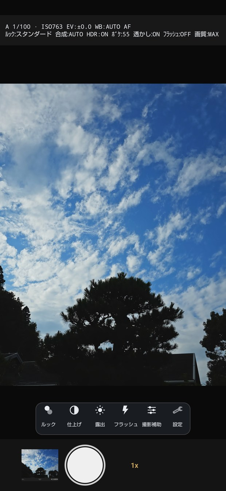
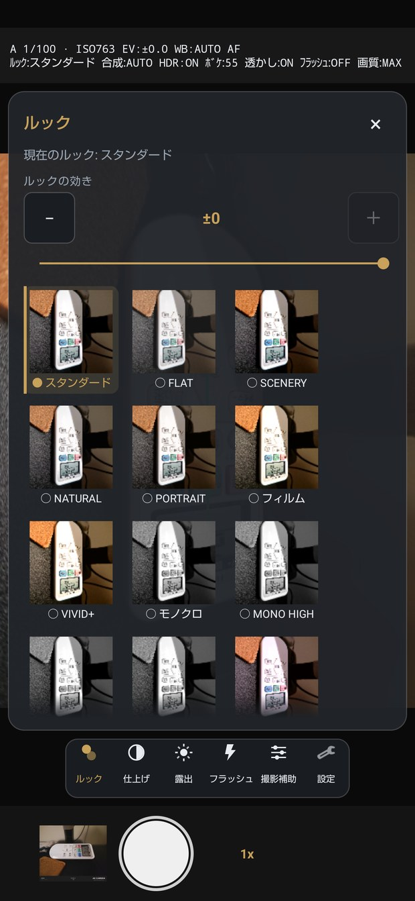
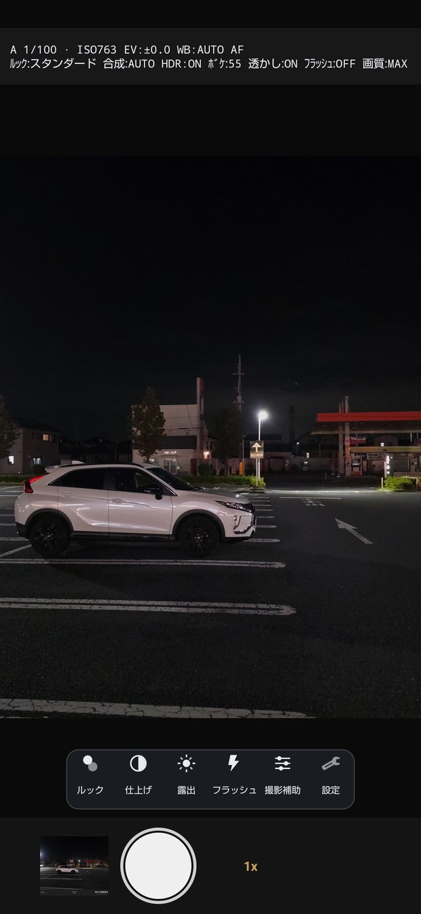

FEATURE 05
かんたん / 標準 / プロ
撮影スタイルは3種類から選べます。シンプルな見た目がお好みの方はかんたん。細かいパラメータ調整をしながら撮りたい方はプロ。それ以外の方は標準から始めてみてください。あとから変更できます。
撮影画面。上の帯に、いまの設定がひと目で出ます
View More
露出モード、露出補正、ホワイトバランス、タップAF、AFロック、セルフタイマー、音量ボタンでのシャッター、構図グリッド、水準器、ピーキング。



